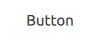

Button QML Type
Push-button that can be clicked to perform a command or answer a question. More...
| Import Statement: | import QtQuick.Controls |
| Inherits: | |
| Inherited By: |
Properties
- flat : bool
- highlighted : bool
Detailed Description

Button presents a push-button control that can be pushed or clicked by the user. Buttons are normally used to perform an action, or to answer a question. Typical buttons are OK, Apply, Cancel, Close, Yes, No, and Help.
Button inherits its API from AbstractButton. For instance, you can set text, display an icon, and react to clicks using the AbstractButton API.
A button emits the signal clicked() when it is activated by the user. Connect to this signal to perform the button's action. Buttons also provide the signals canceled(), doubleClicked(), pressed(), released() and pressAndHold() for long presses.
See the snippet below on how to connect to the button's signals.
RowLayout { Button { text: "Ok" onClicked: model.submit() } Button { text: "Cancel" onClicked: model.revert() } }
See also Customizing Button and Button Controls.
Property Documentation
flat : bool |
This property holds whether the button is flat.

A flat button typically does not draw a background unless it is pressed or checked.
The default value is false.
highlighted : bool |
This property holds whether the button is highlighted.

A button can be highlighted in order to draw the user's attention towards it. It has no effect on keyboard interaction.
The default value is false.